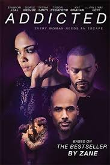
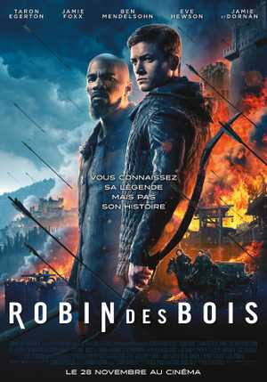
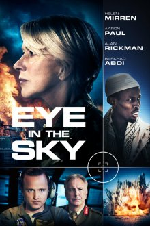

J’ai terminé ma formation à l'Institut Supérieur d'Informatique (https://www.isi-mtl.com/) en décembre 2018. Je viens d’être acceptée pour le batch de janvier 2019 à «le Wagon» situé sur la rue Casgrain. Ma formation est d’une durée de 9 semaines intensive. .
See for yourself|  |
2014 - AddictedTraduit de l'anglais-Addicted est un thriller érotique américain de 2014 réalisé par Bille Woodruff. Le film, basé sur le roman à succès du même nom de Zane et adapté par Christina Welsh et Ernie Barbarash, est sorti en salle le 30 janvier 2014. |
|  |
2018 - Robin des boisRobin des Bois est un film d'aventure américain réalisé par Otto Bathurst, sorti en 2018. Il s’agit de l’adaptation de la tradition orale Robin des Bois. |
|  |
2016 - Eye in the skyDepuis le QG interarmées de Londres, le colonel Katherine Powell pilote une opération spéciale visant à capturer, à Nairobi, les membres d'un groupuscule terroriste ultra-dangereux. |